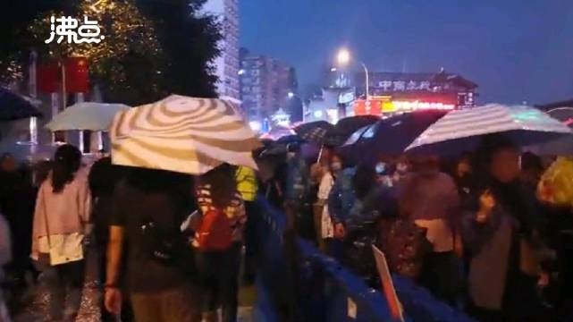

洪崖洞没必要上去。外面看看就行了。除非你特别喜欢拥挤的环境。@网易财经:【#居民带人抄近路进洪崖洞收费20元# 游客：把我们带到电梯口人就走了】10月2日，重庆洪崖洞人流涌动，进景区的队排到了马路对面。游客林先生称，有当地居民可以带着“抄近道”快速进景区，一人20块钱，可以不用排两三个小时的队。跟着进入一个居民楼21楼，到了电梯口居民就走了。（沸点视频）身边拍客的微博视频 128万次播放 00:58
 】10月2日，重庆洪崖洞人流涌动，进景区的队排到了马路对面。游客林先生称，有当地居民可以带着“抄近道”快速进景区，一人20块钱，可以不用排两三个小时的队。跟着进入一个居民楼21楼，到了电梯口居民就走了。（沸点视频）
】10月2日，重庆洪崖洞人流涌动，进景区的队排到了马路对面。游客林先生称，有当地居民可以带着“抄近道”快速进景区，一人20块钱，可以不用排两三个小时的队。跟着进入一个居民楼21楼，到了电梯口居民就走了。（沸点视频） 身边拍客的微博视频
身边拍客的微博视频